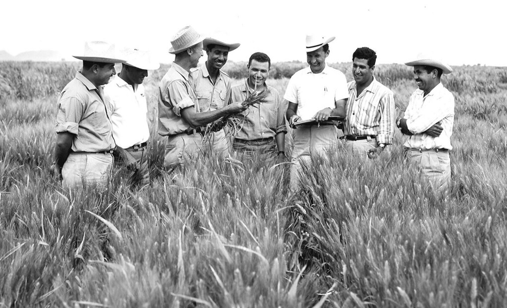

Dr. Norman Borlaug
The man who saved a billion lives

Here's a timeline of Dr. Borlaug's life:
- 1914 - Born in Cresco, Iowa.
- 1933 - Leaves his family's farm to attend the University of Minnesota.
- 1935 - Works in the Civilian Conservation Corps, helping starving Americans.
- 1937 - Finishes university and takes a job with the United States Forest Service.
- 1941 - Works on scientific research after being rejected for military service.
- 1942 - Receives a Ph.D. in Genetics and Plant Pathology.
- 1944 - Begins agricultural research in Mexico to develop disease-resistant wheat.
- 1945 - Develops methods that help increase wheat production.
- 1953 - Helps develop high-yielding wheat varieties suited to Mexican agriculture.
- 1962 - His high-yielding wheat varieties help India address food shortages.
- 1970 - Receives the Nobel Peace Prize.
- 1983 - Helps several African countries improve their maize and sorghum yields.
- 1984 - Becomes a distinguished professor at Texas A&M University.
- 2009 - Dies at the age of 95.
"Borlaug's life and achievement are testimony to the far-reaching contribution that one man's towering intellect, persistence and scientific vision can make to human peace and progress."
— Indian Prime Minister Manmohan Singh